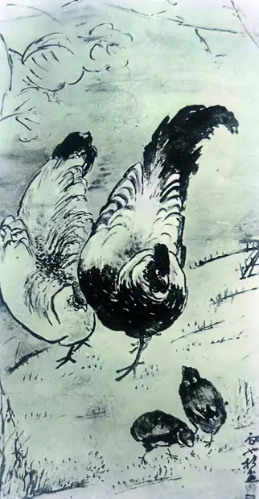

群鸡 A Chicken Family
访问原网页 ↗Visit original website ↗

馆藏图像与原文Archived images and documents


相关记录Related records · S009
原始网址Original URL
https://edizionicafoscari.unive.it/media/pdf/journals/venezia-arti/2024/1/iss-33-2024.pdf访问原网页 ↗Visit original website ↗

相关记录Related records · S009
https://edizionicafoscari.unive.it/media/pdf/journals/venezia-arti/2024/1/iss-33-2024.pdf